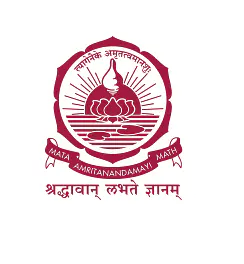
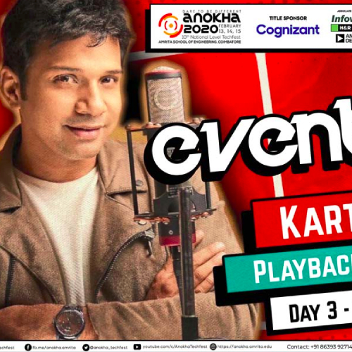
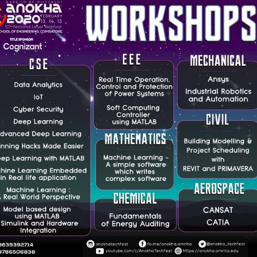

Anokha 2023 – 12th National Level Techfest
Instagram id:
Timing
Starts On : 22 Feb 2020 9:00 am
Ends On : 24 Feb 2020 5:00 pm
About
“Anokha Techfest, the annual event of Amrita School of Engineering, Coimbatore provides an unique opportunity for students to participate in fun-filled and
challenging events and workshops. The event throws open opportunities for students from all disciplines to challenge themselves and foster the “Can Do” attitude.
One of the key highlights of the Anokha 2020 edition was the Green Anokha concept. It was so wonderful to see the students adopt and implement our Chancellor AMMA’s
idea of “Living in Harmony with Nature”. It was plastic-free and eco-friendly Anokha – an initiative that will become a tradition!!”, Dr. Sasangan Ramanathan, Dean, Faculty of Engineering,
Amrita Vishwa Vidyapeetham.
- 13th edition of the techfest of Amrita School of Engineering, Amrita Vishwa Vidyapeetham, Coimbatore held from February 22-24, 2020.
- Special event as it is happening on the silver jubilee year of the Amrita Vishwa Vidyapeetham, Coimbatore campus.
- Tag lines of techfest are “Dare to be Different” and “Bigger, Better & Greener”.
- One of India’s top techfests and first to have United Nations Academic Impact (UNAI) accreditation.
- A new dimension added to this 10th edition as Anokha emerging as perhaps the first green techfest in India.
This year’s Theme was Green Anokha with a vision to have a fully smart and green campus. Various activities towards this include e-passport or
Anokha pass for all participants, no printing with all information on events and workshops on Anokha app, fully cashless transactions using e-wallet developed by students,
no plastic policy, eco-friendly & bio-degradable cutlery, smart dustbins, electric vehicles and cycle rally to kickstart the event.
- Major sponsors of the 2020 edition included Cognizant, Analog Devices, H&R Block, Infoview, State Bank of India (SBI) and SkillsDA.
- A new addition to the techfest in the 2020 edition was the Techfair showcasing 75 student innovations with opportunity provided to support the top innovations towards business incubation.
Various student innovations on display included humanoid robotics, portable single-seater two-wheeler, automatic gear changing system, anemia detector, electronic waste management,
AR based indoor navigation etc, RC plane and air-purifier helmet.
- 50 highly competitive events in all branches of engineering, gaming and robotics. Popular contests and competitions included Robowarz, Amrita’s version of Battlebots,
Death race, Autonomous robots & Drone challenge, Arduino U know, Hydropowered Rocket, Paper wings, Robosoccer, King of Concrete and master of circuits.
- 25 workshops by premier companies like Intel, Cisco, Robert Bosch, Mathworks, Nvidia, 24*7 AI in cutting-edge areas like Deep Learning, Welding, CANSAT, Ideab
ox, Machine Learning, IoT, Simulink, etc.
GALLERY

